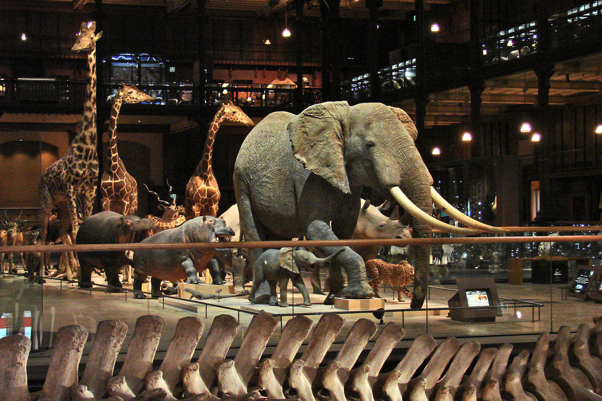
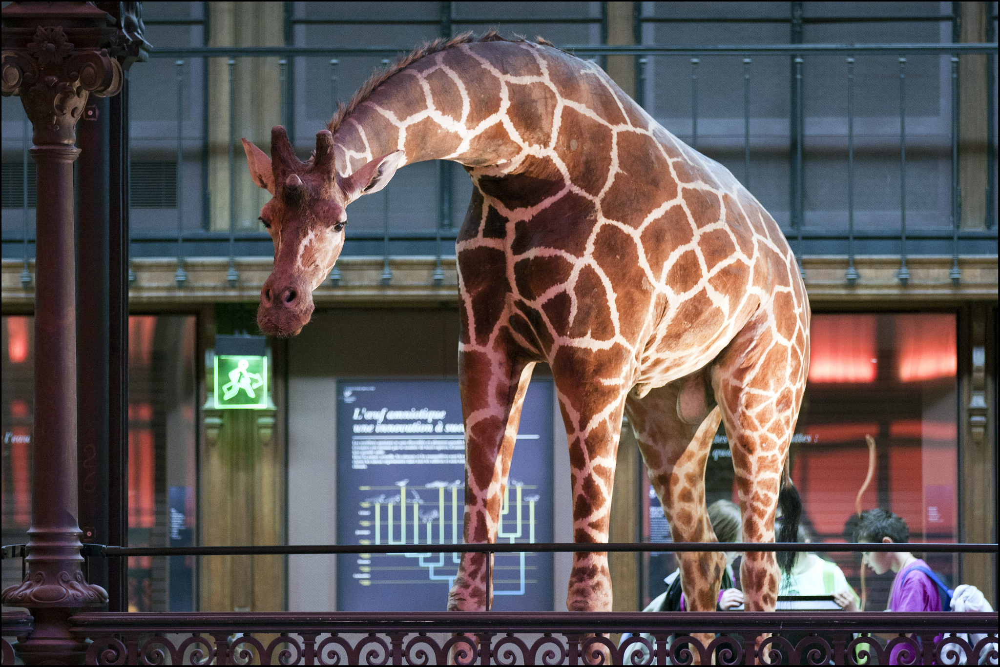

Muséum National d'Histoire Naturelle
Il complesso di maestosi edifici sul lato meridionale del Jardin des Plantes è la sede del Muséum National d'Histoire Naturelle. La splendida galleria di mineralogia e geologia, nel primo padiglione, è chiusa per lavori di risistemazione. All’estremità est del giardino, verso il fiume, le Galeries de Paléontologie et d'Anatomie Comparée sono più interessanti di quel che si può pensare. Al piano terra dell’ampia sala a volta, migliaia di scheletri di animali sembrano evolversi in un ordine ben gestito. Vi figurano lo struttura scheletrica di un rinoceronte inviato a Versailles nel 1770 e quello di Rock-Sand, il cavallo che nel 1903 vinse la Triple Crown (nome che identifica tre importanti e antiche competizioni ippiche inglesi). Al primo piano i dinosauri — qualcuno in gesso, altri veri — sono sistemati per era. Non perdete (non che sia possibile, comunque) il mammuth, il diplodocus e il megaterio, l’antenato gigante del coccodrillo.
La Grande Galerie de l'Evolution, splendidamente ristrutturata, è accanto all’ingresso sudoccidentale del Jardin des Plantes. Illustra la storia dell’evoluzione con l’ausilio di animali imbalsamati — trovati nel polveroso ex museo di zoologia e riportati a nuova vita con una combinazione perfettamente riuscita di effetti di luce e musica di sottofondo - e pannelli informativi di legno. Al piano più basso, luci soffuse illuminano lo spazio in cui sono esposte le creature più bizzarre che abitano gli abissi oceanici. Ascensori di vetro salgono silenziosi dalla savana, dove animali africani avanzano in fila indiana come se dovessero entrare nell’arca di Noè. È un’esperienza divertente per i più piccoli, ai quali è riservato anche un piccolo centro interattivo al primo piano.


{kind=link}
{kind=link}